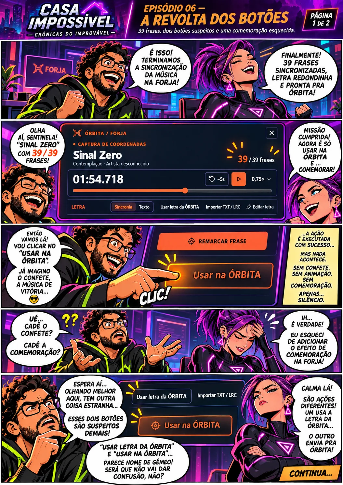
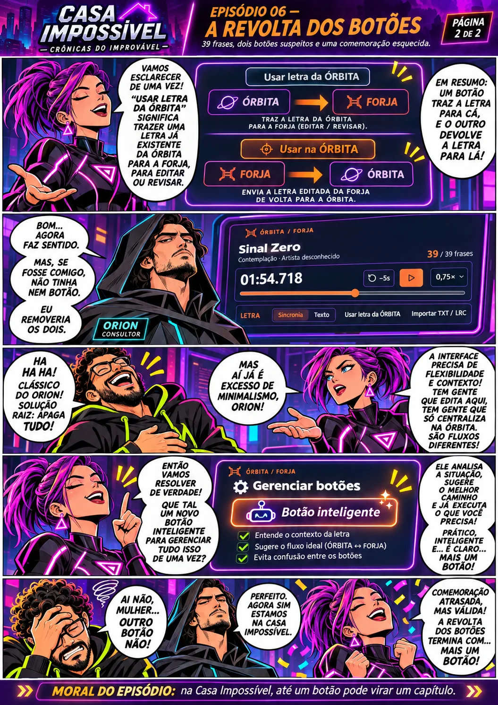

39 de 39 frases.
O print da FORJA mostrava uma letra sincronizada por frases, com o indicador 39/39. A letra tinha sido trabalhada pelo Guardião.
✦ 39 FRASES · DOIS NOMES PARECIDOS · CONFETE AUSENTE

39 / 39 FRASES · COMEMORAÇÃO EM REVISÃO ↗CADÊ O CONFETE?Duas pranchas contam a mesma aventura, em sequência: primeiro a vitória de sincronizar uma letra, depois a revolta por causa de dois controles de nomes parecidos. Os balões são dramatizados; os botões observados no print são reais.
A FORJA entregou a letra. O Guardião procurou a comemoração e encontrou outra coisa para investigar.
A Sentinela explica os dois sentidos do fluxo. Orion recomenda menos botões. A proposta seguinte comprova que o conflito ainda não terminou.

⤢ ABRIR A PRANCHA 02 INTEIRAPara leitura confortável em tela pequena, abra cada prancha em tamanho original e amplie a imagem. As duas páginas pertencem à mesma história, não são versões concorrentes.
O que vimos de fato: FORJA exibindo 39/39 frases, pedido de confete e controles com nomes semelhantes. O tribunal de Orion e a proposta de botão inteligente são dramatizações. A semelhança dos nomes não comprova função duplicada.
O print da FORJA mostrava uma letra sincronizada por frases, com o indicador 39/39. A letra tinha sido trabalhada pelo Guardião.
“Usar letra da ÓRBITA” aparece no grupo superior e “Usar na ÓRBITA” no rodapé. Os nomes podem confundir; a operação de cada um requer código para auditoria.
O Guardião pediu um efeito de celebração ao aplicar a letra. Este episódio não afirma que o efeito já esteja implementado nem que uma persistência definitiva foi comprovada.